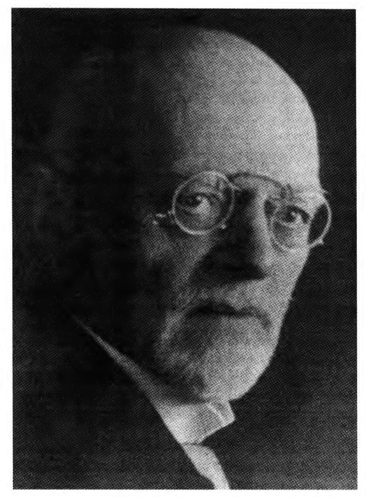
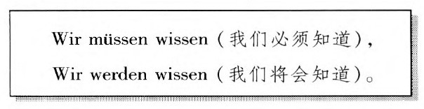
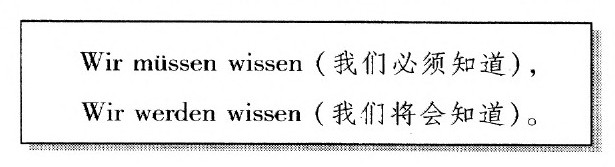

乔治二世是莱布尼茨的最后一任资助人英王乔治一世的儿子，1737年，他在德国中部莱内河畔的中世纪小城哥廷根建立了一所大学。城市的围墙、几所哥特式教堂以及古老街道上的半木质的房子仍然保存至今。哥廷根大学那令人骄傲的数学传统可以追溯到19世纪，那里产生了像卡尔·弗里德里希·高斯、伯恩哈德·黎曼、勒热纳·狄里克莱和菲利克斯·克莱因这样伟大的数学人物。但哥廷根真正的数学辉煌还是在20世纪。那时，主要是受到大卫·希尔伯特的感召，世界各地的学生都来到这个无可争议的世界数学中心，直到1933年纳粹统治德国所导致的大批流亡为止。
20世纪40年代末，当我本人在读研究生期间，关于哥廷根在20年代的逸事仍然在被一代代的人传诵着。我们听说了卡尔·路德维希·西格尔在易上当受骗的贝塞尔-哈根身上实施的无休无止的恶作剧。我个人最喜欢的故事是，人们看到希尔伯特日复一日地穿着破裤子，这对许多人而言都是令人尴尬的。把这种情况得体地告诉希尔伯特的任务落在了他的助手理查德·库朗身上。库朗知道希尔伯特喜欢一边谈论数学，一边在乡间漫步，于是便邀请他一同散步。库朗设法使他们两人走过一片多刺的灌木丛，这时库朗告诉希尔伯特他的裤子被灌木丛刮破了。“哦，不是，”希尔伯特回答说，“它几星期前就是这样了，不过还没有人注意到。”正是在20世纪的20年代，希尔伯特掀起了一场令人瞩目的运动，那就是用数学来证明数学本身的合理性。从希尔伯特的运动到阿兰·图灵对计算本性的洞察，其间发生了一连串怪事。
大卫·希尔伯特出生于小城柯尼斯堡的一个清教徒家庭。柯尼斯堡位于普鲁士东部，以哲学家伊曼努尔·康德的故乡而闻名。1870年，俾斯麦与拿破仑三世的法国交战，随即借着德国的巨大胜利把德国统一成了一个以普鲁士国王为皇帝的帝国。当时希尔伯特才8岁。到了他进入柯尼斯堡大学学习数学时，他在这门学科上的非凡才华已经得到公认，他把数学融入谈话的特有风格也建立了起来。他可以同他的朋友赫尔曼·闵可夫斯基和阿道夫·胡尔维茨一起长时间地漫步讨论数学。1
从莱布尼茨和牛顿创立微积分到大卫·希尔伯特成为数学家，在这两个世纪里，不少人都发现极限过程可以漂亮地应用于许多方面。在这些结果中，有很多是通过对符号的纯形式操作来获得的，人们对它们背后的含义并未作过多考虑。但是到了19世纪中期，清算之日还是来临了，需要对符号进行概念理解的问题层出不穷。冲在解决这些问题最前线的则是格奥尔格·康托尔、他的老师卡尔·外尔施特拉斯以及他的朋友理查德·戴德金。
1888年，希尔伯特游历了德国各个主要的数学中心，以同他这个领域的主要人物进行接触。在柏林，他拜访了康托尔的强硬对手利奥波德·克隆内克，他们两年前就已相识。克降内克是一个大数学家，他的一些著作对于希尔伯特的成就起着相当重要的作用。但是，正如希尔伯特昔日的学生赫尔曼·外尔在半个世纪后的一篇悼文中所写的，希尔伯特认为克隆内克正在用“他的力量和权威迫使数学服从专断的哲学原理。”这些原理使得克降内克对他那个时代的大部分数学持一种极度否定的态度。克隆内克不仅反对康托尔的超限数，而且也反对外尔施特拉斯、康托尔、戴德金为微积分的极限过程提供一个坚实的基础所做出的全部努力。克隆内克把这些努力斥之为毫无价值。他特别主张对存在的数学证明应当是构造性的。也就是说，要想让克隆内克接受一个对满足某种条件的、实际存在着的数学对象的证明，它就必须能够提供一种方法来明确地呈现出这个对象。希尔伯特不久将会在著作中挑战这种说法。许多年以后，他将这样向学生来解释这种区分，即在礼堂中所有听讲的学生中（他们中没有人是完全秃顶的），总有一个学生是头发最少的，尽管他没有明确的办法来识别出这个学生。2

（作者收藏）
这个世界是不断变化的，但有些东西却是不变的。数学家们通常关心的正是找到那些能够在其他事物变化时保持不变的东西。这时，他们谈论在某些变换下保持不变的那些东西。乔治·布尔在一篇早期的论文中开创了对所谓代数不变量的研究。3到了19世纪的最后25年，代数不变量已经成了数学研究的主要焦点之一。人们在代数操作上展开了英雄式的较量，以期解决如何发现不变量的问题。在这种努力中，德国数学家保罗·果尔丹是一位真正的行家，他被其同时代人戏称为“不变量之王”。在研究代数的过程中，果尔丹猜出了一个关于代数不变量结构的简化定理。根据果尔丹的猜想，在考虑一个特定的代数表达式的所有不变量时，总是会有几个主要的不变量，借助它们，所有其他的不变量都可以用一个简单的公式来表达。然而，他的这次努力只是证明了，这一猜想仅仅在一个非常特殊的情况下才是正确的。果尔丹的猜想被当时的数学家视为所面临的主要问题之一，一般认为，只有在操作代数上具有果尔丹那样能力的人才能证明它。在这种情况下，大卫·希尔伯特对果尔丹猜想的证明引发了强烈的震撼。希尔伯特依靠的不是复杂的形式操作，而是抽象思维的力量。
只是在与果尔丹本人会面之后，希尔伯特才发现自己被果尔丹所提出的问题迷住了。他的解决方案花了6个月时间才完成，它建立在一个极具一般性的结论之上，即今天所谓的希尔伯特基本定理，其证明非常简单。利用这个基本定理，希尔伯特证明了，如果假定果尔丹的猜想是错误的，那么就会导致矛盾。这种对果尔丹猜想的漂亮证明不会使克隆内克感到满意，因为它不是构造性的。希尔伯特没有列出其存在性已经确定无疑的一系列主要不变量，这一证明只是表明，如果假定它们不存在将会导致矛盾。然而，伴随着它对抽象思维力量的证明，希尔伯特的证明为即将来临的那个世纪的数学开辟了道路。希尔伯特的证明所揭示出来的更为普遍的观点足以摧毁代数不变量的古典理论。今天，果尔丹主要是因其对希尔伯特证明的反应而被人记住的。“这不是数学，”他惊呼，“这是神学。”
希尔伯特对果尔丹问题的解决所产生的轰动效应立刻使他成为当时的第一流数学家。此后，他并没有满足于所取得的成就。在永远离开不变量理论之前，他又对一些细节进行了归整，特别是又给出了一个完全构造性的对果尔丹猜想的证明。4此外，他还就各种数学主题发表了许多论文。值得注意的是，有一篇小论文无疑带有一种必定为克隆内克所不齿的康托尔的气息。然而，尽管如此多产，希尔伯特实际的职业却并不尽如人意。多年来，他一直在柯尼斯堡大学任编外讲师，依靠他的演讲所获得的微薄收入过活。有一段时间，他只给一个来自巴尔的摩的学生上了整整一门课。在给他的好朋友闵可夫斯基的一封信中，希尔伯特讽刺地说，这里有11个编外讲师竞争同样数目的学生。
1892年，年轻的希尔伯特的生活发生了重大改变。这始于68岁的克隆内克于年底去世，此时卡尔·外尔施特拉斯还没有退休。德国数学的封闭的学术生活开始复苏了，这造就了德国数学界百花齐放的良好局面。在做了6年编外讲师之后，希尔伯特终于在柯尼斯堡大学获得了一个学术职位。也是在同一年，他与自己最心爱的舞伴凯特·耶罗士结了婚。一年之后，他们的儿子弗朗茨出生了。与此同时，哥廷根大学的数学领袖菲利克斯·克莱因决定动员希尔伯特到哥廷根去。1895年春，克莱因的动员成功了，希尔伯特搬到了哥廷根，他将在那里一直呆到48年后去世。
如果说希尔伯特对果尔丹问题的出色证明宣告了代数不变量古典理论的终结，那么他应德国数学会之邀所写的《数论报告》（Zahlbericht）则预示着一大批数学成果的诞生。学会本以为这是一篇关于一门相对较新的数学分支——代数数论当前状况的报告，许多数学家都对这个主题感到困惑，5但他们最后得到的却是一篇经过深思熟虑的、从第一原理出发对这一领域进行重新组织的报告。直到半个世纪后我做研究生时，我们仍在饶有兴味地研究它，并且受益匪浅。
当希尔伯特来到哥廷根时，他已经为一大批数学课程做好了上课准备，他在柯尼斯堡任编外讲师时就一直在上这些课。奥托·布鲁曼塔尔是他所指导的69名获得博士学位的学生中的第一个，他在40年后的回忆录中仍然能够清楚地回忆起自己刚到哥廷根时希尔伯特留给他的印象：“这位中等身材的思路敏捷的人留着红色的胡须，穿着非常普通的衣服，看起来一点也不像一个专家……[与其他教授相比]”布鲁曼塔尔是这样描述希尔伯特讲课的：
1898年的秋季学期，学生们很吃惊地发现，希尔伯特准备开设一门“欧几里得几何原理”课程。他们原以为他完全沉浸在代数数论中，而从未想到他会对几何感兴趣。这个题目显得很奇怪，因为欧几里得几何学毕竟是一门中学课程。真正的惊讶出现在课程开始之后，这时学生们发现他们听到的是对几何基础的一种全新的发展。这是希尔伯特对数学基础保有深刻兴趣的第一个迹象。我们主要关注的正是这种兴趣。在讲演中，希尔伯特提出了一套几何学公理，以弥补欧几里得的古典处理中的几个漏洞。他强调了这门学科的抽象本性：必须能够说明，那些定理通过纯逻辑就可以从公理中推导出来，而不必受到我们从图形中所“看到”的东西的影响。有一则著名的逸事是这样的：据说他曾经讲，我们可以不说点、线、面，而说“桌子、椅子和啤酒杯”，只要它们遵守公理，定理就必须仍然能够成立。最后，希尔伯特证明了他的公理是一致的，也就是说从公理中导不出矛盾，这样就使他的成就更为牢靠。这一论证表明，他的几何公理系统中的任何不一致都会导致算术中的不一致。因此，希尔伯特所做的工作就是把欧几里得几何学的一致性归结为算术的一致性，而算术的一致性问题则留待它日解决！
1900年8月，在巴黎出席一次国际会议的数学家们都想知道，新的世纪会给这门学科带来什么。此时，令人眩目的成就已经使38岁的大卫·希尔伯特到达了事业的巅峰。在这次会议上，希尔伯特向代表们作了一个特邀报告。在报告中，他列举了23个用当时的方法似乎很难解决的问题，作为对20世纪数学家的一个挑战。7希尔伯特以其特有的乐观主义宣称，所有数学家都深信，“每一个明确的数学问题都必定可以完全得到解决……这一信念……是对我们工作的巨大鼓舞。我们在心中听到了这样的永恒召唤：这里有一个问题，去找出它的答案，你能够通过纯理性找到它。”希尔伯特列出的第一个问题就是康托尔的连续统假设（即没有集合的基数介于自然数集与由所有自然数集所组成的集合的基数之间）是否为真。在悖论的威胁对克隆内克的否定态度极为有利的这个时期，这是对康托尔的超限数的明确肯定。
第二个问题是希尔伯特对欧几里得几何学公理一致性的证明所留下的问题——为实数的算术建立公理的一致性。以前对一致性的证明都是关于相对一致性的证明，也就是说它们都是把某一个公理集合的一致性归结为另一个集合的一致性。但希尔伯特意识到，对于算术，他已经抵达了逻辑的根底，此时还需要有新的方法。这个问题也为希尔伯特创造了一个机会来解释数学上的存在性的含义。尽管克隆内克已经声称，要想证明数学对象存在，就必须提出一种能够构造或展示相关对象的方法，但在希尔伯特看来，存在性只要求能够证明，假设这些对象存在并不会导致矛盾：“如果可以通过有限次的逻辑过程证明，赋予一个概念的性质永远不会导致矛盾，那么我们就可以说，这个概念的数学存在性……就被证明了。”根据希尔伯特的说法，既然假定一切康托尔的超限基数所组成的集合的存在会导致矛盾，那么这就表明这样一个集合并不存在。特别是在伯特兰·罗素1902年写给弗雷格的那封毁灭性的信中所说的悖论广为人知以后，人们渐渐地认为数学基础所面临的困难导致了一场危机，算术的一致性问题一直令人头痛。直到20世纪20年代，希尔伯特和他的学生们集中精力研究了这个问题，其后果他们几乎不可能预见到。
希尔伯特在1900年所列出的那些问题使一代又一代的数学家殚精竭虑。它们涵盖了纯粹数学和应用数学中的大量主题，预示了希尔伯特未来将会做出的贡献的广度。在一篇悼念希尔伯特的文章中，赫尔曼·外尔评论说，任何一个解决了希尔伯特所列出的问题之一的人都会成为“数学共同体这一光荣集体中的一员”。1974年，美国数学会主办了一个特别的研讨会（我有幸参加了这个会议），专家们在会上讨论了自那时以来源自这些问题的数学进展。会后出版的论文集足足有600多页，希尔伯特问题的丰富内涵由此可见一斑。8
随着伯特兰·罗素公开了他所发现的那个悖论，许多数学家对康托尔的超限数以及基础研究的整个方向产生了前所未有的疑虑。正如我们所看到的，当弗雷格收到包含罗素悖论的那封信后，他径直放弃了自己毕生的工作。不知此时他是否还记得自己10年前曾经作过的预言：
虽然弗雷格和康托尔的朋友戴德金都从斗争中退了出来，但介人这场斗争的却不乏其人。在20世纪的早期，两位世所公认的最伟大的数学家希尔伯特和昂利·庞加莱都参与了这场争论，但他们所持的观点却并不相同。1900年以后，接下来的一届国际数学家大会于1904年召开，此时距罗素公布他的悖论已经有两年之久。希尔伯特在会上所作的报告中略述了算术的一致性证明可能采取的形式，并且明确提出了自己解决危机的方法。10他没有忘记指出，这个证明可以被拓展到把康托尔的超限数也包括进来。庞加莱不久就发现，希尔伯特犯了循环论证的错误：这个证明所要辩护的方法被用在了对这些方法不可能导致矛盾的证明中。又过了些年，希尔伯特才有能力回应这个反对意见。庞加莱发现他所谓的“康托尔主义”并非毫无用处，但他坚持说，“实无限并不存在。康托尔主义者忘记了这一点，他们陷入了矛盾。”11这里，庞加莱与高斯在80多年前所写的话（上一章中已经提到）相呼应：“我极力反对把无限当成一种完成的东西来使用，这在数学上是决不能允许的。”康托尔毕生的伟大工作都是对这一传统的英勇无畏的挑战。
伯特兰·罗素并没有从战场中退却。他一直希望能够发展出一种符号逻辑体系，利用这种体系，就可以实现弗雷格把算术还原为纯逻辑的计划而不会导致悖论。在向其同时代人解释他的工作的过程中，他极大地得益于意大利逻辑学家朱塞佩·皮亚诺所创立的符号系统（特别是第三章中所介绍的那个系统），这个系统远比弗雷格的系统易于理解。庞加莱在抨击罗素的工作时尖刻地指出：
庞加莱并非没有注意到，严肃地看待罗素的工作将有可能把数学还原为纯粹计算。（莱布尼茨之梦！）在嘲笑这一观念时，他说：
伯特兰·罗素挽救弗雷格计划的努力体现于罗素与阿尔弗雷德·诺斯·怀特海合写的三卷本巨著《数学原理》（Princip-iaMathematica）中（出版于1910～1913年）。这部著作从弗雷格《概念文字》的纯逻辑开始，以清楚明白的数学为结束，中间是简单而直接的步骤，它完全体现了庞加莱的芝加哥机器的精神。悖论通过一种精心设计的、使用起来很不方便的分层结构而得以避免。事实上，在这种结构中，任何一个集合都只能拥有来自同一层的成员。这种分层大大削弱了普通数学的能力，于是，一条特别可疑的还原公理被提了出来，以穿透层与层之间竖立起来的壁垒。14此外，《数学原理》还因一种背后的混淆而受到损害。虽然弗雷格已经清楚地认识到他正在处理两种层次的语言——他正在构造的一种新的形式语言以及可以谈论这种新语言的日常语言，但怀特海与罗素的这部著作在这个问题上却不够清楚，它把这两个层次混在了一起。15这就意味着，在希尔伯特看来如此重要的整个结构的一致性问题在罗素的语境下甚至就不会出现。尽管如此，《数学原理》仍然是一个里程碑式的成就，它一劳永逸地证明了，在一个符号逻辑系统中对数学进行完全的形式化是绝对可行的。
当伯特兰·罗素正在努力为古典数学的广度寻找一种逻辑基础以避免悖论时，一位优秀的年轻荷兰数学家L·E·J·布劳威尔确信，这一切几乎都是错误的，都应被抛弃。布劳威尔1907年所写的博士论文表现出对康托尔的超限数以及当时大部分数学工作的强烈敌意，以至于人们认为他骨子里全都是克隆内克的精神。1905年，布劳威尔从数学研究中抽空出版了一本小书《生活、艺术和神秘主义》（Life, Art and Mysticism），书中充斥着浪漫的悲观主义情绪。在描绘了这个“忧伤的世界”中的生活之后，这个忧郁的年轻人总结说：
尽管布劳威尔对自我弃绝的生活大唱赞歌，但他却发动了一场自以为是的、从头开始重建数学的斗争，以使他的哲学信念得到满足。他本可以轻易地选择一个传统的数学主题，但他还是决定写一篇关于数学基础的博士论文。17他的导师很不情愿地答应了，但由于他的这位高明的学生坚持要把那种奇怪的不相干的观念带入其博士论文，这位导师惊骇地写道：
在布劳威尔看来，数学就存在于数学家的意识中，它最终导源于时间这个“数学的原初直观”。真正的数学在数学家的直观中，而不在语言的表达中。数学非但不是逻辑（如弗雷格和罗素所主张的），逻辑本身倒是来源于数学。在布劳威尔看来，康托尔相信自己已经找到了不同大小的无限，这纯粹是无稽之谈，他的连续统问题也是无足轻重的；希尔伯特宣称一致性就是数学上的存在性所需要的一切，这是错误的。事实恰恰相反：
克隆内克认为，确立数学上的存在性的唯一有效方法就是构造。布劳威尔比这走得更远，他坚决反对把亚里士多德的排中律这条基本的逻辑定律（它断言任何命题或者为真，或者为假）应用于无限集。20在布劳威尔看来，有些命题既不能说为真，也不能说为假；对于这些命题，已知的方法还不能判定这一点。希尔伯特在对果尔丹问题的最初证明中使用了排中律，这是数学家的通常做法：他证明了否定这个猜想将会导致矛盾。在布劳威尔看来，这样一个证明是不可接受的。
完成了博士论文之后，布劳威尔决定暂时把他备受争议的观点搁置起来，把注意力集中到证明他的数学能力上。他选择的竞技场是刚刚兴起的拓扑学领域。他得到了几项深刻的结果，其中包括那条重要的不动点定理。221910年，当29岁的布劳威尔发表这个基本定理时，他已经赢得了希尔伯特的称赞。大卫·希尔伯特对此印象很深，他甚至还邀请这个年轻人加入他那份著名的杂志《数学年鉴》（Mathematische Annalen）的编委会，后来他对这次邀请后悔不已。在1912年获得了阿姆斯特丹大学的一个常任教席之后（这得到了希尔伯特的举荐），布劳威尔觉得可以回到他那革命性的设想了，他现在把它称为直觉主义。
赫尔曼·外尔是希尔伯特的得意门生，他是那个世纪最伟大的数学家之一，也是后来接任希尔伯特在哥廷根职位的人。他的兴趣涵盖了数学、物理学、哲学甚至艺术。但是令希尔伯特非常沮丧的是，外尔确信，外尔施特拉斯、康托尔和戴德金已经建立的处理极限过程的基础是摇摇欲坠的，他无法接受所有这些所基于的实数系统。他在一段著名的话中宣称，整个大厦“都建立于沙堆之上”。21外尔重建实数连续统的努力最终并没有令他本人满意，当他得知布劳威尔对此的看法时，不禁为之着迷。“……布劳威尔，这就是革命。”他宣称。在希尔伯特看来，这是太过分了。19世纪20年代，德国确实是多事之秋。德国在第一次世界大战中已经战败，被迫签订了凡尔赛条约。在德皇退位之后上台的社会民主党政府已经被严重的经济问题以及左翼和右翼让它下台的呼声搞得焦头烂额，各个方面都传来激烈的言辞。在这种使人头脑发热的气氛中，希尔伯特在1922年所作的一篇讲演中把他过去的学生的擅离职守比作背叛：
如果我们注意到希尔伯特言辞中浓烈的火药味，很可能以为他在狂热地欢呼即将来临的1914年的战争呢，那时有无数的欧洲人都是如此。从一开始，他就公开表示自己认为战争是愚蠢的。1914年8月，93位著名的德国知识界人士联名向“文明世界”发表了一份宣言，以回应英国、法国和美国对德军入侵比利时的愤慨。这份宣言称：“说我们已经非法地侵犯了比利时的中立……我们的军队已经残忍地把卢汶夷为平地，这些都不是真的。”希尔伯特被要求签字，但他拒绝了，他说他不知道这些指责是否是真的。1917年，即希尔伯特公开指责外尔和布劳威尔的5年前，当血腥的堑壕战仍在吞噬一代欧洲人的时候，希尔伯特发表了一篇给刚刚去世的法国大数学家伽斯东·达布写的悼文。这篇文章刊出后，一群凶悍的学生聚集到他的住宅前，要求他收回这篇悼念“敌人数学家”的文章。希尔伯特拒绝了，他跑到校长办公室威胁说要辞职，除非就这些学生的无理行为向他作官方的道歉。他很快就收到了这样的道歉。23当优秀的年轻数学家埃米·诺特被任命为哥廷根的编外讲师时，有人认为这将导致一个女人成为教授和大学评议会成员，这时希尔伯特说：“我看不出一个候选人的性别为什么会成为不能让她当讲师的理由，大学评议会毕竟不是澡堂。”241917年9月，当德国与它的邻国法国正竭尽全力杀戮对方的公民时，希尔伯特在苏黎世发表了一篇题为“公理化思想”的讲演，开头是一句富有挑衅意味的话：
算术的一致性问题在希尔伯特1900年在国际数学家大会上所作的报告中排在第二位。然而只是到了19世纪的20年代，希尔伯特才严肃地提出了自己对这个问题的看法。他的学生威廉·阿克曼以及助手保罗·贝尔奈斯都与他通力合作，约翰·冯·诺依曼也做出了贡献。23希尔伯特从怀特海-罗素《数学原理》的逻辑系统开始，最初也是按照弗雷格-罗素的目标想用纯逻辑的术语来定义数。但他很快就不得不放弃这个目标，不过仍然认为他们所创立的符号逻辑是至关重要的。在希尔伯特的新纲领中，数学与逻辑将通过一种纯形式的符号语言被发展出来。这样一种语言可以从“内部”和“外部”来看。从内部看，它就是数学，每一步演绎都可以完全弄清楚。但是从外部看，它仅仅是许多公式和符号操作，它们可以在不考虑意义的情况下进行演算。这里的任务是要证明，从这种语言中导出的任何两个公式都不会彼此矛盾，或者等价地说（正如后来所表明的情况那样），像1=0或0≠0这样的公式是不可能导出的。
庞加莱和布劳威尔所提出的批评必须要面对这样的挑战：如果一种一致性证明想要确保的方法恰恰就是它所依赖的方法，那么从这样一种证明中是不可能产生任何有价值的东西的。希尔伯特的大胆想法是一种全新的数学，他称之为元数学或证明论。一致性证明将在元数学内部完成。尽管在形式系统内部，每一种数学方法都可以被不加限制地运用，但元数学方法却要严格限于那些被希尔伯特称为“有限性”（finitary）的无可争议的方法。这样希尔伯特就可以嘲弄布劳威尔和外尔说：我已经证明，数学家们使用通常的那些方法是不会导致矛盾的，我证明这个结论所使用的方法甚至就是你们所赞同的那些方法。或如冯·诺依曼所指出的：“可以这样说，证明论在直觉主义的基础上把古典数学建立起来，并以这种方法把直觉主义归于荒谬。”26
在他的方法所要营救的数学“宝藏”中，希尔伯特强调指出要把康托尔的超限数包括进来。关于这一点他说：“在我看来，这是数学领地所开出的最令人惊叹的花朵，它是人类纯理性活动的最高成就之一。”27他拒不接受布劳威尔和外尔的批评，并且宣称：“没有人能把我们从康托尔为我们建造的乐园中赶走。”28虽然布劳威尔已经准备承认希尔伯特纲领很可能会取得成功，但他依然初衷不改：“……这样也得不到任何数学价值：对于一个错误的理论来说，即使它不能被任何矛盾所反驳，它依然是错误的理论，这就如同一种罪恶的政策就是罪恶的一样，即使它不能被任何法庭所禁止。”29
当希尔伯特使用半合法的方法把布劳威尔从《数学年鉴》的编委会中撤下时，他们之间的舌战已经上升到了行为，这使阿尔伯特·爱因斯坦开始抱怨“这场蛙鼠之战”。30希尔伯特及其合作者与布劳威尔和外尔之间的争论当然都植根于关于知识本性的基本哲学问题。事实上，双方的观点都受到了伊曼努尔·康德的深刻影响。然而，与大多数哲学争论不同，希尔伯特和布劳威尔所持的立场是以纲领的方式表现出来的，这导致了非常具体的问题，于是也就潜藏着被后来的事情所推翻的可能。
布劳威尔所面临的主要问题是如何真正实现他的纲领中所说的对数学的重建，如何使数学家们相信，他们可以不用古典的实数连续统，不用排中律，也仍然不会丧失他们那些最宝贵的财富。然而，布劳威尔所提出的直觉主义数学却面临着外尔后来所说的“一种几乎令人无法承受的尴尬……”，它并没有使多少人皈依。31尽管布劳威尔从未放弃过自己的观点，但他愈来愈感孤立，其晚年是在“莫须有的经济顾虑和对破产、迫害和疾病的妄想的恐惧”中度过的。1966年，当他85岁时，他在通过他家门前那条街道时被一辆车撞死。32也许这个故事中最大的讽刺是，直觉主义之所以能够存活下来，并不是因为它像布劳威尔所设想的那样，成了数学工作者的正确实践，而是因为对包含他的思想的形式逻辑系统的研究。33其中有些系统实际上已经成了实现形式演绎的计算机程序的基础。34
当然，希尔伯特纲领所提出的主要问题就是它最初的问题：算术的一致性问题。阿克曼和冯·诺依曼研究了这个问题，并且取得了部分成果。当时认为这不过是一个运用技巧得到最终结果的问题。1928年，希尔伯特和他的学生阿克曼出版了一本薄薄的逻辑课本，这本书是基于希尔伯特（在贝尔奈斯的协助下）自1917年以来的授课内容写成的。书中提出了两个关于弗雷格《概念文字》的基本逻辑（后来被称为一阶逻辑）的问题。从某种意义上说，这两个问题已经流传了一段时间，但正是希尔伯特对逻辑系统可以从外部进行研究的这种眼光，才造就了表达它们的清晰形式。其中一个问题是证明一阶逻辑的完备性，即任何一个从外部看来有效的公式都可以只用课本中提出的规则从系统内部导出。第二个问题以希尔伯特的“判定问题”（Entscheidungs problem）而闻名，即对于一个一阶逻辑的公式，如何找到一种方法，可以在定义明确的有限的步骤内判定这个公式是否是有效的。我们在第七章中将会看到，作为需要数学家解决的具体问题，这两个问题的解决在20世纪出现了希望，而在17世纪还只能是莱布尼茨的梦想。
在1928年，希尔伯特在波伦亚举行的一届国际数学家大会上作了讲演。除非受到国际形势的影响，这些会议每4年举行一次。当然，1916年没有举行会议。1920年和1924年的会议都举行了。但是战后的痛楚是如此强烈，以至于德国人没有受到邀请。是希尔伯特坚持要德国数学家接受参加1928年国际数学家大会的邀请，而不是像路德维希·比贝尔巴赫（后来成为纳粹分子）和布劳威尔那样，希望联合抵制会议作为对凡尔赛条约的抗议。在讲演中，希尔伯特提出了一个关于形式系统的问题，这个系统建立在把一阶逻辑规则应用于现在被称为皮亚诺算术或PA（以意大利逻辑学家朱塞佩·皮亚诺的名字命名）的自然数公理系统的基础之上。希尔伯特希望能够证明PA是完备的，也就是说，任何一个可以在PA中表出的命题，或者可以在PA中被证明为真，或者可以在PA中被证明为假。两年后，这个问题被一个名叫库尔特·哥德尔的年轻逻辑学家解决了，但答案完全不像希尔伯特所预料的那样。事实上，后来的情况表明它对于希尔伯特纲领有着巨大的破坏作用。
希尔伯特的传记作家把他的妻子凯特描绘成一个聪慧而有判断力的人、她丈夫的贤内助（他的许多手稿都是她打印的）、一位母亲以及向年轻的数学家们传授生活智慧的引路人，对于那些年轻的数学家，希尔伯特的房间大门永远是敞开着的。希尔伯特自认为是一个尘世中人，他曾经嘲弄说，自己最好的休假是和一位同事的妻子度过的。他从未厌倦逢场作戏，只要情况允许，他就会试图与最漂亮的年轻女性跳舞。他的“激情”是如此声名狼藉，以至于在一个快乐的生日宴会上，对应着字母表中的每一个字母，关于他与另一个人的“爱情”都可以即兴作诗。但是到了字母“K”时，每个人都被难住了。这时凯特说：“你至少可以想起我一次了。”于是就有了下面的几句诗：
对这对夫妻来说，他们的儿子弗朗茨一直是痛苦的来源（在许多方面）。他虽然在身体上与父亲极为相似，但在精神领域却没有任何相似之处。尽管他竭力掩饰自己，但事实很清楚，弗朗茨是一个心理极为不正常的人，以至于最后不得不被送到医院。父亲对这个悲剧的反应是他不再有一个儿子了，而母亲却不这么想。
1929年，一幢新房子建成了，这里将成为哥廷根数学研究所的所在地。资金由洛克菲勒基金会和德国政府提供，这在很大程度上要归功于理查德·库朗卓有成效的外交努力。但是哥廷根成为世界数学研究中心的日子很快就要结束了。当希尔伯特1930年退休时，赫尔曼·外尔被邀请接任他的职位。同年，希尔伯特被他的出生地柯尼斯堡授予“荣誉市民”称号。那年秋天，他应邀于柯尼斯堡在德国科学家和医生协会的会议上作了一场特殊的讲演。希尔伯特特地选了一个较具一般性的主题：自然科学与逻辑。在这篇内容广泛的演说中，他强调了数学在科学中以及逻辑在数学中所扮演的极端重要的角色。带着他那一贯的乐观主义，他坚持说不存在不能解决的问题。他以下面的话作为结尾：35

就在希尔伯特发表演讲前几天，一个关于数学基础的研讨会在柯尼斯堡召开了。演讲者有布劳威尔的学生和追随者A·海丁、哲学家鲁道夫·卡尔纳普以及（代表希尔伯特证明论纲领的）约翰·冯·诺依曼。在会议结束时的圆桌讨论会中，一个名叫库尔特·哥德尔的羞怯的年轻人（我们下一章的主题）不动声色地作了一项声明，对于那些领会了其要旨的人们来说，这标志了基础研究中的一个新的时代。冯·诺依曼立刻意识到一切都结束了——希尔伯特的纲领是不可能成功的。当希尔伯特得知哥德尔的声明时，他最初多少有些生气，因为在他看来，这是对他的“我们将会知道”的当头一棒。但是当贝尔奈斯用1934年和1939年出版的两大卷著作写下了希尔伯特证明论的成就时，哥德尔的工作起了很大的作用。36
1932年，希尔伯特的70岁生日如期在新落成的数学研究所举行了庆祝活动。席上有烤面包和音乐，当然还有舞蹈，这位老人对跳舞仍然乐此不疲。也是在1932年，沮丧之情达到了顶点，纳粹在国会选举中大获全胜。在接下来的1月份，希特勒被任命为总理，德国科学的崩溃接踵而至。犹太人被禁止授课，他们纷纷地逃往了国外。尽管理查德·库朗在一战期间参加了德军的战斗，但他还是被那个他已经付出了如此多心血的数学研究所拒之门外。最终他在纽约大学创建了另一个数学研究所，这个以他的名字命名的研究所坐落在纽约市的格林威治村。尽管赫尔曼·外尔是一个“雅利安人”，但他仍然觉得德国的形势无法忍受，于是就接受了普林斯顿高等研究院的一个职位，加入了阿尔伯特·爱因斯坦的队伍。24
希尔伯特似乎被这种新的政治形势弄糊涂了——他一方面公开抨击政治制度，即使是在这样做越来越危险的时候，另一方面又不能理解自诩的德国法律体系为什么无法抵御任何袭击。在一次聚会中，希尔伯特问他的第一个博士生布鲁门塔尔在教什么课。当得到的回答是他不再被允许教课时，这位老人义愤填膺地问他为什么不去诉诸法律。布鲁门塔尔本人去了荷兰，但是当德国人1940年入侵荷兰时，他陷入了绝境。1940年，他死在了今天位于捷克共和国的特里西恩施塔特（Ther-esienstadt）的臭名昭著的犹太人区。
希尔伯特于1943年去世，此时二战的硝烟还未散去。凯特也于两年之后辞世。希尔伯特的墓碑上刻着这样两行字：
